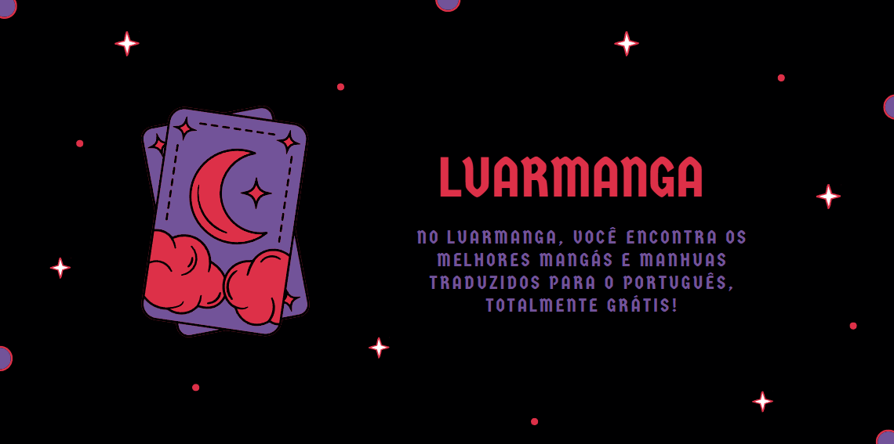
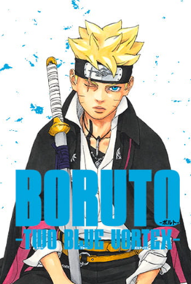
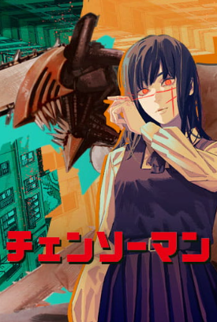
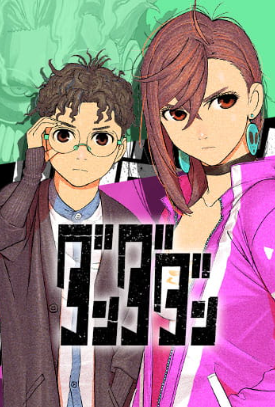
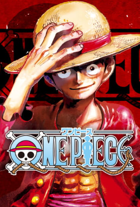
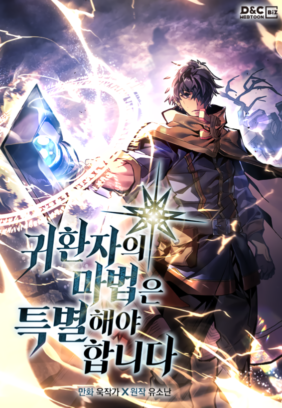
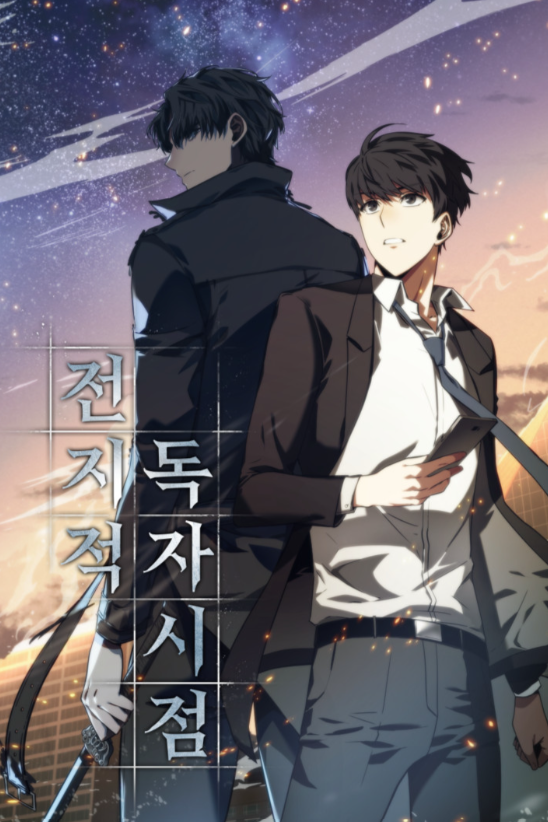
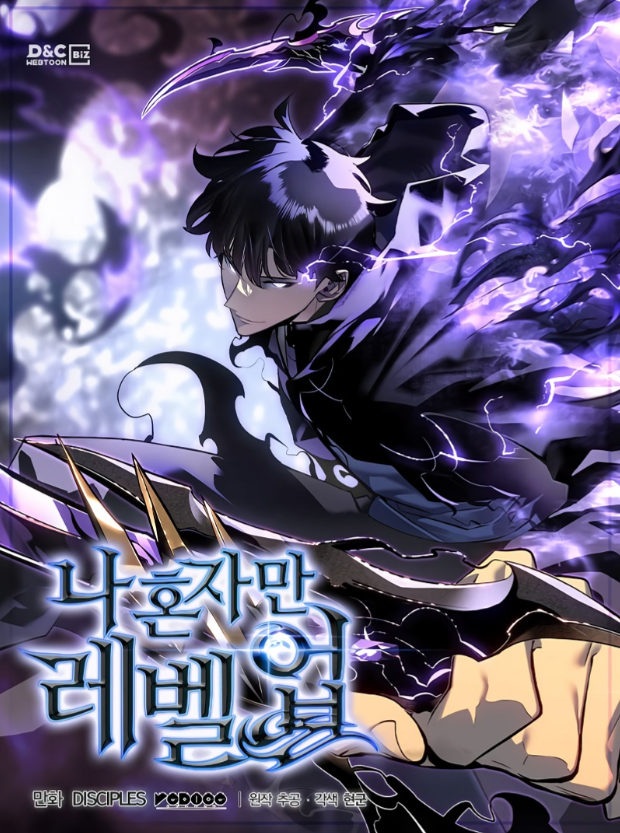
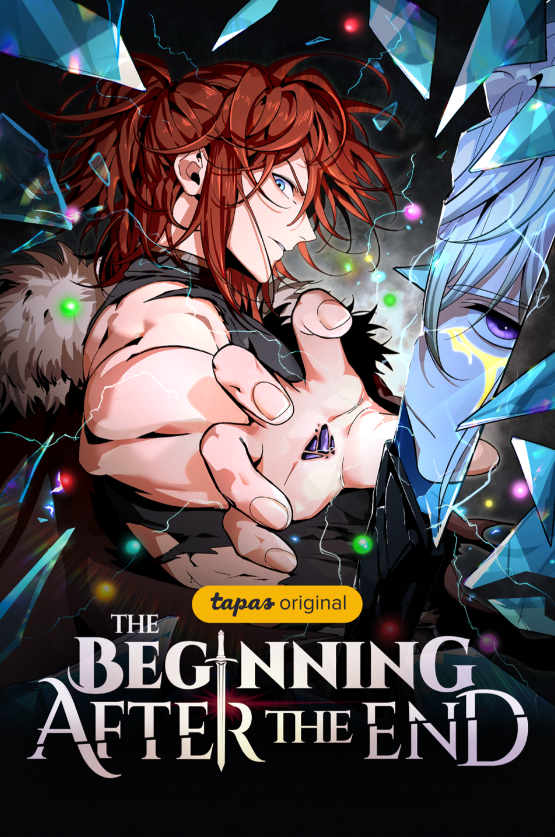

Bem-Vindo ao LuarManga!
Somos um projeto dedicado à tradução de mangás para o português, feito por fãs para fãs. Nosso objetivo é tornar suas histórias favoritas acessíveis para todos, de forma gratuita e com muita qualidade. Acreditamos que todos merecem a chance de mergulhar nas aventuras, emoções e mundos incríveis dos mangás, sem barreiras de idioma. Aqui você encontrará traduções feitas com carinho, respeitando a essência original de cada obra. Aproveite sua leitura — e seja parte da nossa comunidade!
Mangás mais populares do momento
 |
 |
 |
 |
| Boruto | Chainsaw Man | Dandadan | One Piece |
| "Boruto: Naruto Next Generation" acompanha Boruto Uzumaki, filho do sétimo Hokage Naruto Uzumaki, enquanto ele se torna um ninja e enfrenta desafios como a pressão de ser filho do herói, o preconceito devido a seu clã e as ameaças da organização terrorista Karma. Boruto e sua equipe, liderados por Konohamaru Sarutobi, enfrentam diversas missões e perigos, incluindo o retorno de velhos inimigos e a busca por soluções para um novo problema. | Chainsaw Man narra a história de Denji, um jovem pobre que faz um contrato com Pochita, o Demônio da Motosserra, tornando-se um híbrido humano-demônio com a capacidade de transformar partes do seu corpo em motoserras. Denji, endividado e lutando pela sobrevivência, é obrigado a caçar demônios para pagar a dívida do seu pai. Ao ser morto por um demônio, ele renasce como o Homem-Motosserra, um ser com coração de demônio, e é recrutado por um grupo de caçadores de demônios do governo. | Em Dandadan, Momo Ayase, uma estudante do ensino médio de uma família de médiuns, acredita em fantasmas, mas não em alienígenas. Seu colega Ken Takakura, apelidado de Okarun, acredita em alienígenas, mas não em fantasmas. Eles decidem comprovar suas crenças, com Momo investigando locais de avistamento de OVNIs e Okarun explorando locais assombrados. Momo é abduzida por alienígenas e Okarun é possuído por um espírito, desencadeando uma aventura sobrenatural onde eles precisam trabalhar juntos para derrotar os inimigos e lidar com os próprios desafios pessoais. | One Piece conta a história de Monkey D. Luffy, um jovem que sonha em se tornar o Rei dos Piratas. Para isso, ele reúne uma tripulação, os Chapéus de Palha, e embarca em uma jornada épica para encontrar o tesouro lendário, o "One Piece", deixado pelo Rei dos Piratas, Gol D. Roger. Luffy e sua tripulação enfrentam desafios e perigos em busca do One Piece, explorando o vasto mundo de One Piece, com seus mares perigosos, ilhas misteriosas e inimigos poderosos. |
Manhwas mais populares do momento
 |
 |
 |
 |
| A Returner's Magic Should Be Special | Omniscient Reader's Viewpoint | Solo Leveling | The Beginning After the End |
| "Agora que voltei, não permitirei que meus entes queridos morram de novo!" O Labirinto das Sombras – a catástrofe mais mortal que a humanidade já conheceu. Desir Arman, um dos seis sobreviventes restantes da humanidade, está dentro do Labirinto. Os seis tentam completar o nível final do Labirinto, mas acabam falhando, e o mundo chega ao fim. No entanto, quando Desir pensava que encontraria sua morte, o que surge diante dele é o mundo... de treze anos atrás?! Desir voltou ao passado, à época em que ingressou na mais prestigiada academia de magia do país, Havrion. Ele se reencontra com seus preciosos amigos e está determinado a mudar o passado para salvar o mundo e aqueles que ama...! Faltam três anos para o surgimento do Mundo das Sombras! Mude o passado e reúna aliados poderosos para salvar a humanidade! | Dokja era um trabalhador de escritório comum, cujo único interesse era ler seu web novel favorito, “Três Maneiras de Sobreviver ao Apocalipse.” Mas quando o romance subitamente se torna realidade, ele se torna a única pessoa que sabe como o mundo vai acabar. Munido desse conhecimento, Dokja usa sua compreensão da história para mudar o rumo dos acontecimentos — e do mundo como o conhecemos. | Dez anos atrás, depois do "Portal" que conecta o mundo real com um mundo de montros se abriu, algumas pessoas comuns receberam o poder de caçar os monstros do portal. Eles são conhecidos como caçadores. Porém, nem todos os caçadores são fortes. Meu nome é Sung Jin-Woo, um caçador de rank E. Eu sou alguém que tem que arriscar a própria vida nas dungeons mais fracas, "O mais fraco do mundo". Sem ter nenhuma habilidade à disposição, eu mal consigo dinheiro nas dungeons de baixo nível… Ao menos até eu encontrar uma dungeon escondida com a maior dificuldade dentro do Rank D! No fim, enquanto aceitava minha morte, eu ganhei um novo poder… | Dizem que a solidão acompanha aqueles com grande poder. Permanecendo como um Rei com força incomparável, status, e fama… e muito mais. Eu, que uma vez lutei para viver, me afogava em meu raso trono sem nenhuma vontade ou propósito. Haviam muitos que tinham inveja de mim, mas eu diria de bom grado, “Tirem tudo de mim! Será meu presente!” Um dia, eu finalmente consegui meu presente – uma nova vida. Com uma segunda chance de corrigir meus erros e cumprir meus arrependimentos, permita-me mostrar a você o que um (ex-rei) pode fazer! |